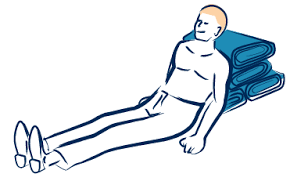

Toute plaie, même simple, peut s'infecter. Le tétanos est une maladie grave, parfois mortelle. Seule la vaccination antitétanique protège. Conseiller de vérifier la validité du vaccin.
Qu'il s'agisse d'un éclat de verre, d'un couteau, d'un clou ou d'une branche — retirer un corps étranger planté peut provoquer une hémorragie grave en libérant les vaisseaux qu'il comprimait.
Allongée
sur le sol ou canapé
Position la plus fréquente
Assise
en laissant la plaie à l'air libre
Facilite la respiration
Allongée
jambes fléchies
Relâche les muscles abdominaux → diminue la douleur
Allongée, yeux fermés
Ne pas bouger la tête
Maintenir tête à 2 mains si possible
Si le saignement ne s'arrête pas · Si la plaie est profonde ou très large · Si un corps étranger est présent → appliquer la conduite à tenir plaie grave et alerter les secours.
Couvrir la victime contre le froid, la chaleur ou la pluie — surtout en cas d'attente prolongée des secours. Glisser une couverture sous et au-dessus d'elle si possible.

🪑 Position d'attente — Plaie thoracique
Points clés : la zone a-t-elle été sécurisée avant d'approcher ? Le couteau n'a-t-il pas été retiré ? L'alerte a-t-elle été donnée rapidement avec les bonnes informations (lieu, âge, nature de la plaie) ? La position assise a-t-elle été respectée (pas d'allongement à plat) ? Kévin a-t-il été surveillé et rassuré ?
Question de prévention : Que faire pour éviter de se retrouver seul dans une ruelle isolée la nuit ? Quels réflexes adopter dans un lieu public en cas de danger ?